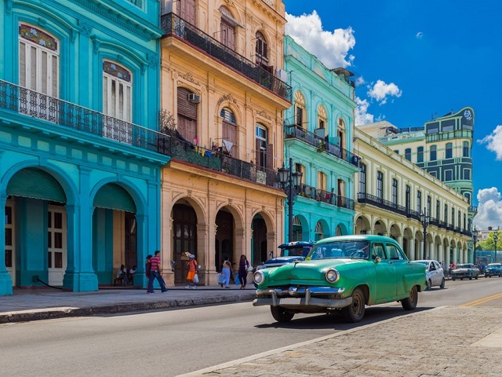
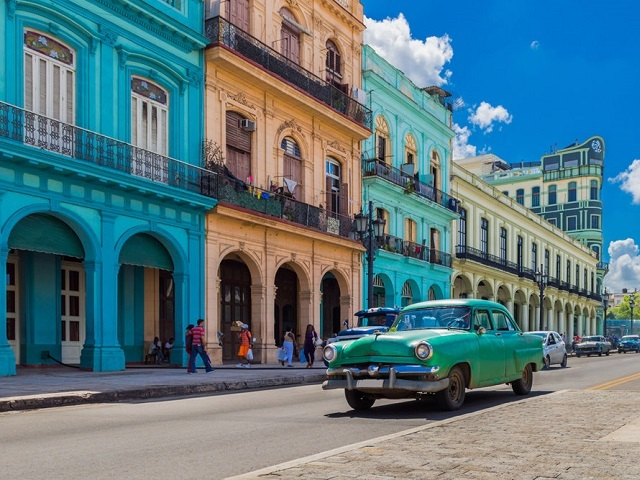

Куба - это...
Куба похожа на принца в плаще бедняка; за иногда ветхими фасадами
задерживается золотая пыль. Именно эти богатые дихотомии делают
путешествие здесь захватывающим. В этой стране, застрявшей во
временном перекосе и шокирующей экономическим эмбарго, которое
длилось более полувека, вы можете распрощаться с повседневными
предположениями и ожидать неожиданностей.
Историческое наследие
Без современных вмешательств колониальные города Кубы не сильно
изменились с тех пор, как мушкетные пираты преследовали
Карибский бассейн. Атмосфера и архитектура особенно волнуют
Гавану, Тринидад и Камагуэй, где грандиозные площади и мощеные
улицы рассказывают сказки о богатстве и интригах.
Удивительные пляжи
Неважно, останавливаетесь ли вы в роскошном отеле в Гаване или
изучаете сельское очарование Виньялес. Не пропустите пляжный
курортный город Варадеро, этот пляжный рай по-прежнему следует
рассматривать как часть ваших кубинских планов путешествий.
Кубинский Кадиллак
Американское торговое эмбарго с Кубой в 1960 году привело к
немедленному отделению тысяч автомобилей 1940-х и 1950-х годов,
построенных в Детройте от их запасных частей. Кабриолеты всегда были
популярны благодаря круглогодичной тропической погоде. Не упустите
место для фотосессии в Гаване. Площадь вокруг Капитолия - лестная
копия здания Капитолия в Вашингтоне, в дневное время украшены
50-летними американскими автомобилями.


 
